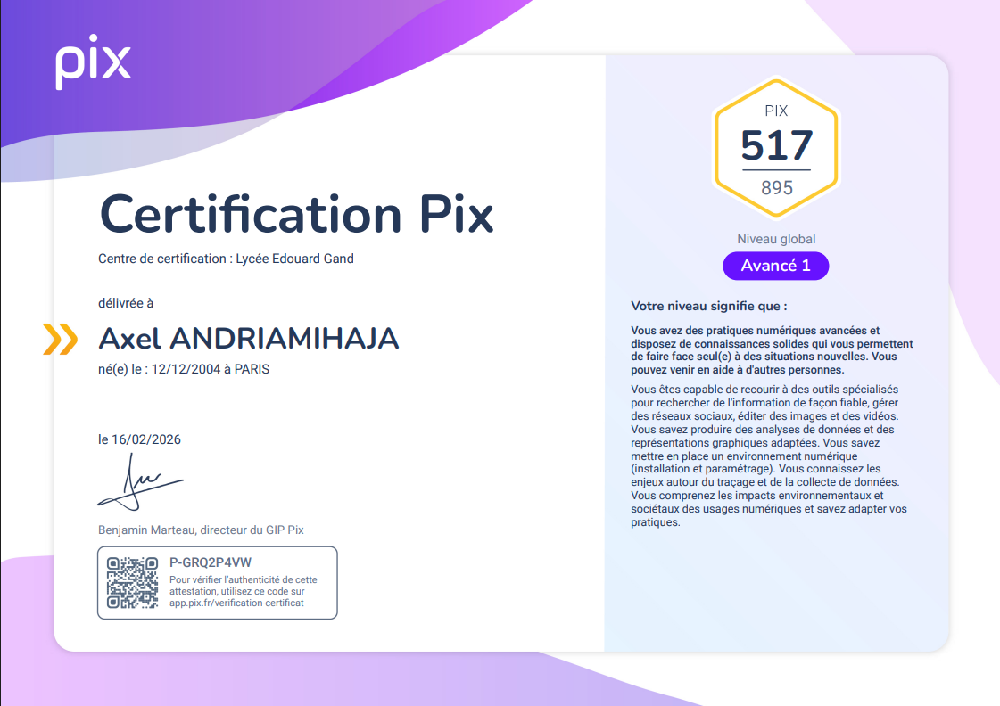
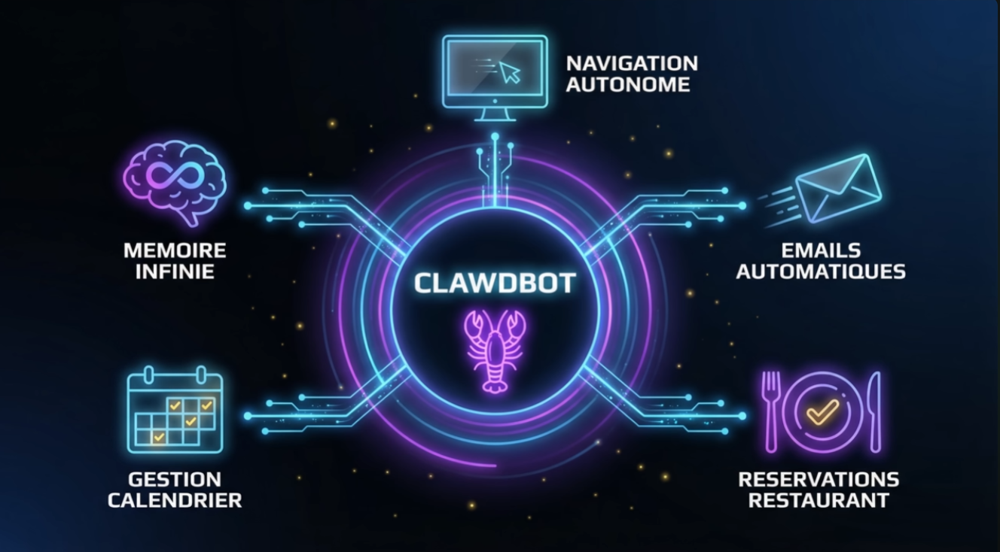
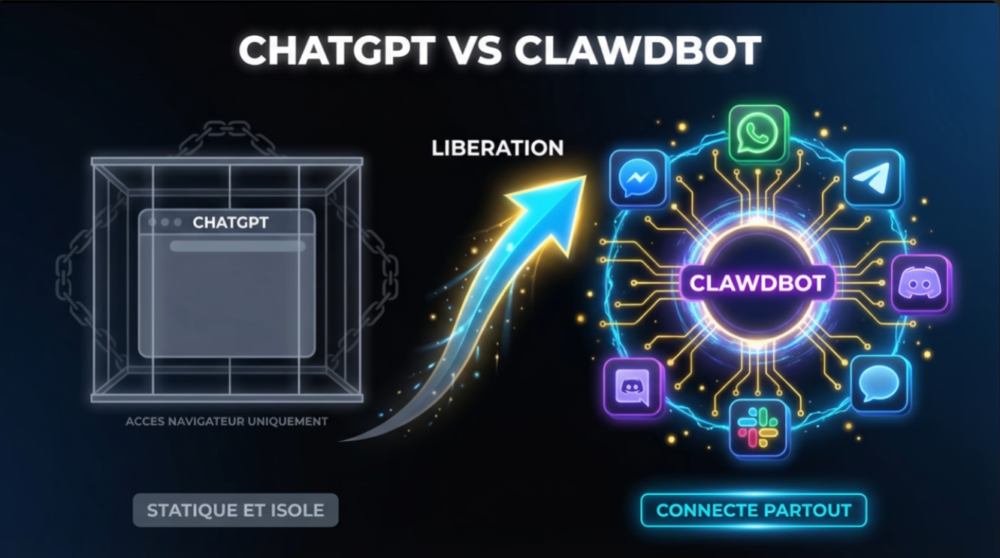
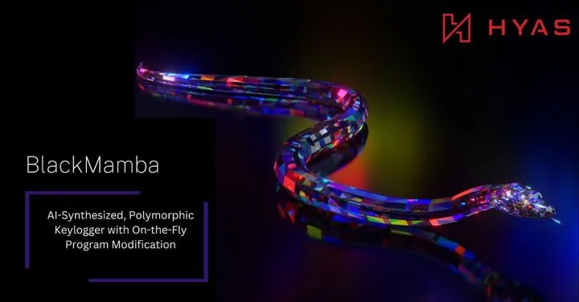

Étudiant en BTS SIO Option SLAM. Développeur passionné par la création d'applications modernes et la cybersécurité.
Voir mes projetsBonjour ! Je m'appelle Axel Andriamihaja. Intéressé par le développement informatique, je suis actuellement en 2ème année de BTS SIO (Services Informatiques aux Organisations), spécialisé en option SLAM au Lycée Edouard Gand à Amiens.
Mon objectif ,plus tard, est de concevoir mes propres application tout en développant continuellement mes compétences techniques.
📍 70 Bd de Saint-Quentin, 80000 Amiens
Actuellement étudiant au Lycée Edouard Gand Amiens, je prépare le BTS SIO (Services Informatiques aux Organisations).
Ce diplôme d'État forme les étudiant à travers 2 différentes option en fonction de s'il préfère s'orienter plus vers le développement d'application et de site web, ou vers l'administration des réseaux et des serveurs.
Les 2 Options cependant traite aussi de la cybersécurité.
Spécialisé en Solutions Logicielles et Applications Métier, je conçois et développe des solutions applicatives (Web, Mobile) et apprends a utilisé des frameworks modernes comme Symfony 7.
L'option Solutions d'Infrastructure, Systèmes et Réseaux vise à administrer les réseaux, déployer des services serveurs et assurer la cybersécurité des organisations.
Mon parcours est illustré par mon Tableau de synthèse ci-contre, regroupant mes réalisations professionnelles (Projet coach, WeatherApp,SioShop, etc.) pour la session 2026.
📍 Lycée Edouard Gand, Amiens
🗓️ 2024 - 2026
Après l'obtention de mon baccalauréat, je me suis réorienté vers ce BTS par curiosité pour le développement d'applications. J'y apprends la conception de solutions logicielles, la gestion de bases de données et le travail en mode projet, avec une spécialisation en solutions applicatives (SLAM).
📍 Lycée Cassini, Clermont de l'Oise
🗓️ 2019 - 2022
Cursus général qui m'a permis d'acquérir une solide base de connaissances et une méthodologie de travail rigoureuse avant de me réorienter et de me spécialiser dans le domaine du numérique et de l'informatique.
📍 12 Rue Laffitte, 75009 Paris
🗓️ Novembre - Décembre 2025
⏰ Durée : 6 semaines
Au sein de ce cabinet de conseil spécialisé en banque et assurance, ma mission principale a été la mise à jour et l'optimisation de leur site institutionnel sous WordPress. J'ai travaillé sur l'amélioration de l'interface utilisateur et l'intégration de nouveaux contenus.
📍 Amiens
🗓️ Mai - Juin 2025
⏰ Durée : 4 semaines
Réalisation d'un site d'e-commerce complet en collaboration avec deux camarades. Nous avons utilisé le framework Symfony 7 pour concevoir une architecture robuste (MVC), gérer la base de données produit et implémenter un système de panier.
🎓 Compétences numériques transversales
🗓️ Obtenue le 16/02/2026

Validation officielle de mes compétences numériques.
Prochainement : Unity et React.js.
Application mobile de Coaching avec suivi de l'IMG et historique intégré.
Site de gestion de mobilier avec système d'inscription à une newsletter et validation mail.
En 2026, l'IA passe du simple chat à l'action concrète avec les agents autonomes. Clawdbot se distingue par sa capacité à naviguer de manière indépendante sur le web pour exécuter des tâches complexes comme effectuez une reservations de place de restaurants ou encore un tri automatique des mails ainsi qu'un compte rendu journalier par message sur votre téléphone des mails importants.

Figure 1 : Automatisation multi-tâches (calendrier, mails, réservations).
Sa force réside dans sa connectivité totale. Contrairement aux modèles isolés, il interagit directement avec des plateformes comme WhatsApp ou Slack pour agir en arrière-plan, pas besoin de prompt par terminal l'ia peut être commander par message whatsapp ou encore discord et peut répondre automatiquement au message envoyé sur votre boîte téléphonique selon vos disponibilité sur votre calendrier ou encore grâce à sa mémoire selon les discussion que vous avez eu avec l'ia il y a jusqu'a 3 semaine.

Figure 2 : Comparaison entre l'IA statique et l'IA connectée "partout".
Cependant Attention ⚠️ il n'est pas recommendé d'utilisé cette assisstant sur son ordinateur personnel, car il demandera accés a toutes vos informations (email,mot de passe enregistré, note ,carte bancaire ,messagerie et pourra effectuez des paiement sans que vous le vouliez lors d'une tâche que vous allez lui confiez! (ex:abonnement a une newsletter payante lors de la demande de récupération d'information sur un sujet)).
L'année 2026 est marquée par l'émergence de preuves de concept alarmantes, notamment les recherches menées par HYAS sur les malwares de nouvelle génération.

Figure 3 : BlackMamba, un keylogger polymorphe synthétisé par IA capable de modification de code à la volée.
Le malware BlackMamba illustre cette menace : il utilise l'IA pour réécrire son propre code malveillant à chaque exécution, rendant sa signature indétectable par les systèmes de sécurité traditionnels (EDR/Antivirus). Cette capacité d'obfuscation dynamique transforme un simple virus en une menace persistante et évolutive.
Au-delà des malwares, le débat porte sur des modèles d'IA jugés trop dangereux pour être rendus publics, à l'image de Claude Mythos.
Ce modèle ultra-spécialisé possède une capacité de détection de failles Zero-Day (failles non encore répertoriées) jugée surpuissante. Si un tel outil tombait entre de mauvaises mains, il permettrait d'automatiser la découverte et l'exploitation de vulnérabilités critiques dans n'importe quel logiciel mondial avant même que les développeurs puissent réagir.
Le défi majeur de 2026 reste donc la régulation de ces modèles de "Shadow AI"(Le Shadow AI (ou IA fantôme) est l'utilisation par les collaborateurs d'outils, de modèles ou de plateformes d'intelligence artificielle sans l'approbation officielle ni la supervision de la Direction des Systèmes d'Information (DSI).) et le passage impératif à une défense prédictive gérée par des IA de protection capables de contrer ces attaques automatisées.
Disponible pour échanger sur mon parcours au Lycée Edouard Gand ou mes projets de la Session 2026.
axel.andriamihaja@outlook.com
+33 6 60 27 68 68
Amiens / Clermont de l'Oise